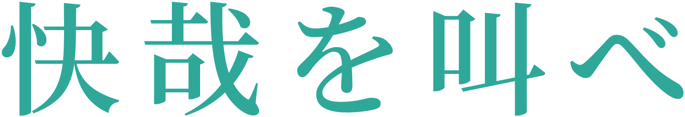
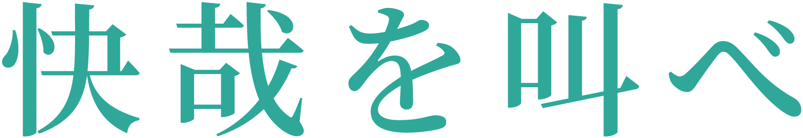
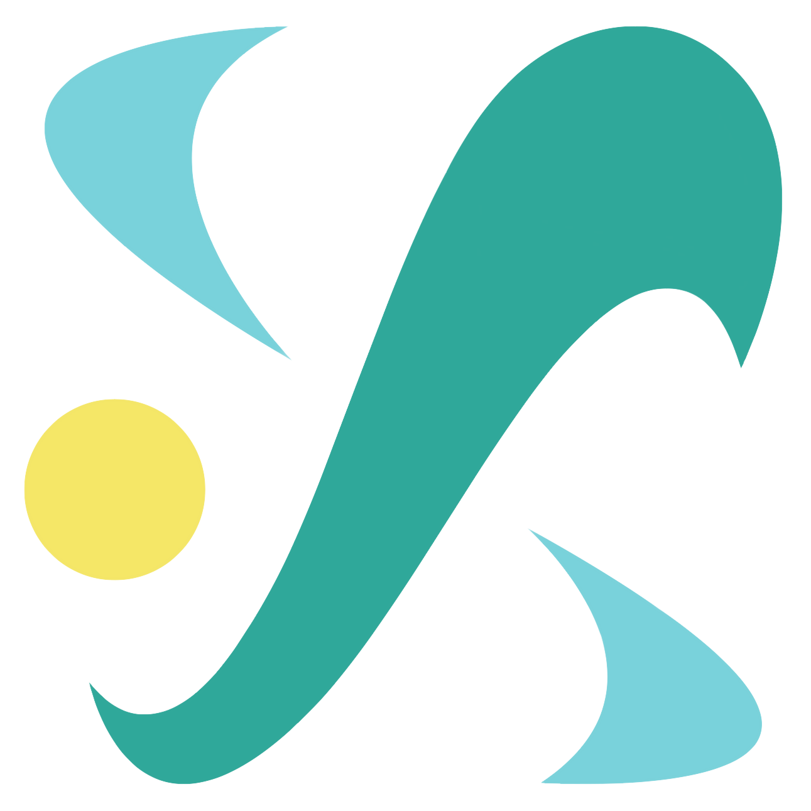
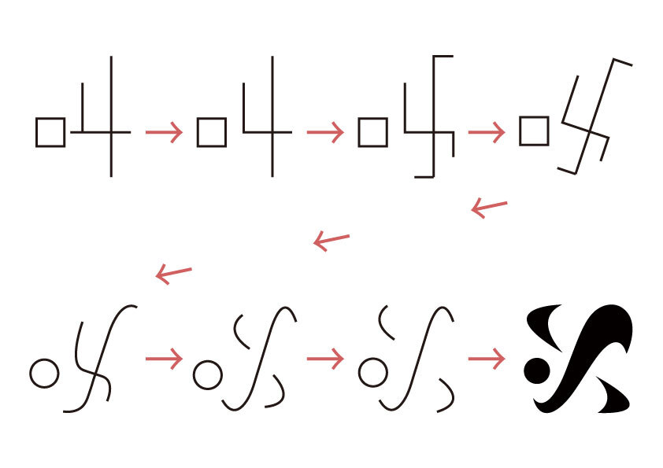
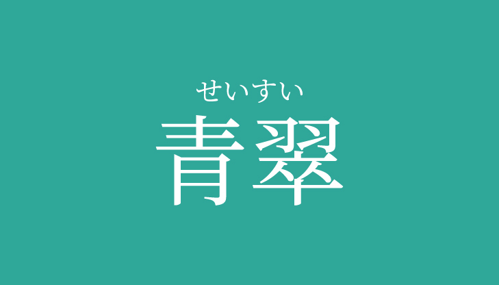

第137回明大祭テーマ
第137回明大祭を象徴するものとして、この度テーマを決定しました。テーマはコンセプト・ロゴ・テーマカラーの3つの要素から構成されます。このテーマを胸に、みなさんの想いを表現できる第137回明大祭を創りあげていきましょう。
 
どれだけの時が流れようとも、
どれだけ世界の姿が移り変わろうとも、
変わらないものがある。
私たちの「想い」はいつだって本物だ。
「想い」を持った「個」が集結し、
創り出す明大祭。
それぞれ「想い」を全力で解放するとき、
心の底からの叫びが溢れるだろう。
君を叫べ、
快哉を叫べ。
 
漢字の「叫」をモチーフに、「快哉（かいさい）」の言葉がもつ晴れやかさ・爽やかさを表現しました。
明大生の輝きが風に乗って広がっていく様子をイメージしました。
第137回明大祭テーマカラー
明大生の輝きが風に乗って広がっていく様子をイメージしました。

テーマカラーは「青翠（せいすい）」です。
明大生の若々しさ・前向きさを広く届けられるように、広大な空の青と若葉のような緑を合わせた色にしました。
明大生の若々しさ・前向きさを広く届けられるように、広大な空の青と若葉のような緑を合わせた色にしました。